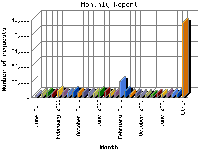

The Monthly Report identifies activity for each month in the report
time frame. Remember that each page hit can result in several server requests
as the images for each page are loaded.
Note: Depending on the
report time frame, the first and last months may not represent a complete
month's worth of data, resulting in lower hits.

| Month | Number of requests | Number of page requests | |
|---|---|---|---|
| 1. | September 2007 | 5 | 5 |
| 2. | October 2007 | 119 | 119 |
| 3. | November 2007 | 200 | 200 |
| 4. | December 2007 | 140 | 140 |
| 5. | January 2008 | 24,118 | 4,552 |
| 6. | February 2008 | 11,518 | 2,669 |
| 7. | March 2008 | 9,957 | 2,397 |
| 8. | April 2008 | 9,808 | 2,353 |
| 9. | May 2008 | 9,334 | 2,547 |
| 10. | June 2008 | 9,381 | 2,797 |
| 11. | July 2008 | 9,537 | 2,671 |
| 12. | August 2008 | 8,912 | 2,594 |
| 13. | September 2008 | 7,614 | 2,436 |
| 14. | October 2008 | 7,385 | 2,836 |
| 15. | November 2008 | 8,619 | 2,699 |
| 16. | December 2008 | 5,734 | 2,214 |
| 17. | January 2009 | 6,791 | 2,354 |
| 18. | February 2009 | 6,440 | 2,180 |
| 19. | March 2009 | 7,264 | 2,469 |
| 20. | April 2009 | 7,805 | 2,328 |
| 21. | May 2009 | 7,005 | 3,320 |
| 22. | June 2009 | 6,612 | 3,334 |
| 23. | July 2009 | 6,225 | 2,654 |
| 24. | August 2009 | 4,644 | 1,852 |
| 25. | September 2009 | 5,541 | 2,358 |
| 26. | October 2009 | 5,658 | 2,983 |
| 27. | November 2009 | 6,563 | 3,315 |
| 28. | December 2009 | 5,960 | 2,700 |
| 29. | January 2010 | 11,928 | 4,205 |
| 30. | February 2010 | 29,045 | 24,078 |
| 31. | March 2010 | 8,558 | 2,969 |
| 32. | April 2010 | 7,751 | 2,850 |
| 33. | May 2010 | 10,098 | 3,310 |
| 34. | June 2010 | 11,228 | 3,320 |
| 35. | July 2010 | 8,236 | 3,334 |
| 36. | August 2010 | 9,046 | 3,436 |
| 37. | September 2010 | 9,090 | 2,910 |
| 38. | October 2010 | 8,803 | 3,532 |
| 39. | November 2010 | 10,724 | 4,612 |
| 40. | December 2010 | 9,304 | 3,942 |
| 41. | January 2011 | 8,896 | 3,459 |
| 42. | February 2011 | 11,899 | 3,809 |
| 43. | March 2011 | 7,579 | 3,081 |
| 44. | April 2011 | 9,178 | 3,724 |
| 45. | May 2011 | 7,704 | 3,258 |
| 46. | June 2011 | 3,711 | 1,371 |
Most active month February 2010 : 24,078 pages sent. 29,045 requests handled.
Monthly average: 3,179 pages sent. 8,297 requests handled.
This report was generated on June 15, 2011 08:35.
Report time frame September 27, 2007 09:53 to June 14, 2011 23:58.
| Web statistics report produced by: analog 6.0 / Report Magic 2.21 |